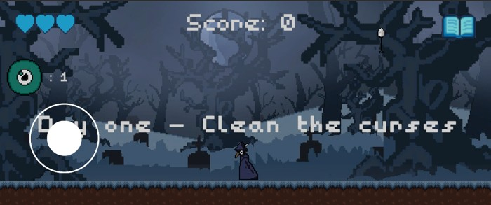

Digger The Crow
Developed as a solo university project at ISEL, I was responsible for every aspect of this mobile game, from gameplay programming to all 2D art and animations.
In Digger the Crow, you are not the hero, but an ancient Crow tasked with purifying the fallen and vengeful spirits left behind by "heroes".
Visit Game Page